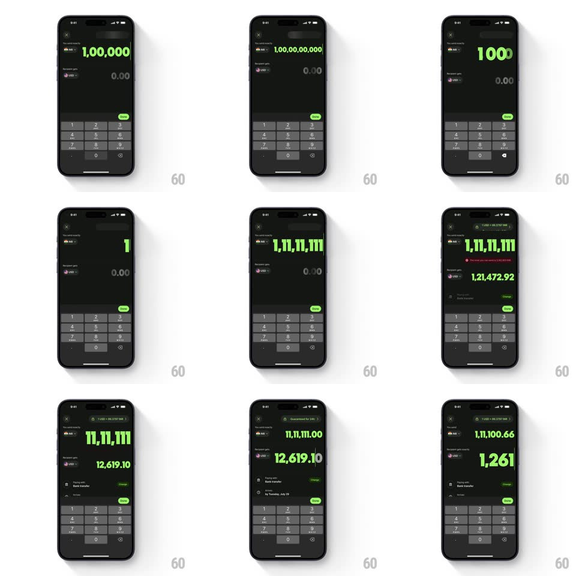

Media
Frame-by-frame

Rebuild this interaction 1:1: Wise's currency input - typing digits into the giant green amount field auto-scales the text to fit, regroups separators live, swaps focus between "You send" and "Recipient gets", and raises a red limit error in context.

Rebuild this interaction 1:1: Wise's currency input - typing digits into the giant green amount field auto-scales the text to fit, regroups separators live, swaps focus between "You send" and "Recipient gets", and raises a red limit error in context. ## Integration Integration: stack-agnostic spec - springs given as stiffness/damping, timed motions as duration + curve; map every value to your framework and animation library of choice. ## Scene A dark transfer screen: a "You send" amount row (currency chip, huge green amount) and a "Recipient gets" row below, a number pad, and a conversion summary (rate chip, fee rows, delivery estimate) that fills in as amounts are entered. ## Motion spec Pattern: auto-scaling amount input with focus transition. - Typing: each digit appends with a quick pop (scale 1.08 -> 1, 100ms); separators regroup live to the amount's locale. - Auto-scale: as the string widens, the font size steps down animated (150ms) so the amount always fits its row; deleting scales it back up. - Focus: switching between the two fields tweens brightness (active field full-bright green, inactive dimmed to 40%, 200ms) - whichever field is edited drives the other's converted value, which updates with a number flicker (150ms). - Error: crossing the send limit slides a red error line in above the pad (translateY -8px -> 0 + fade, 200ms) and the amount tint shifts toward red; clearing back under the limit reverses it. - Details: rate chip, fee breakdown, and "Guaranteed for NNh" fade in (250ms) once a valid amount exists. ## Calibration - Caret stays at the end; regrouping never moves the entry point. - Both directions of entry stay live - editing "Recipient gets" back-computes the send amount. ## Reduced motion Digits appear without pop; font steps are instant. ## Don't miss - The green-on-black amount is the loudest element on screen. - The error is inline and contextual - no modal.